Macro Asset Library
Macro is designed to be a flexible and modular model that can adapt to various energy system representations. The model provides a rich library of pre-defined assets, enabling a "plug-and-play" approach for users building their own energy system.
Each asset is defined by a combination of transformations, edges, and storage units that represent the physical and operational characteristics of a technology. These assets can be combined to create a detailed representation of the energy system, capturing the interactions between technologies and sectors.
In the following sections, we will introduce each asset type and show the attributes that can be set for each of them as well as the equations that define the conversion processes. We will also provide a graphical representation of the asset in terms of transformations, edges, and storages to help the user understand the structure of the asset.
Each section will have the following three parts:
- Graph structure: a graphical representation of the asset, showing the transformations, edges, and storages present in the asset.
- Attributes: a table with the attributes that can be set for each asset type.
- Example: an example of the asset type input file (
.json) that can be used to create the asset.
Available assets
The current library includes the following assets:
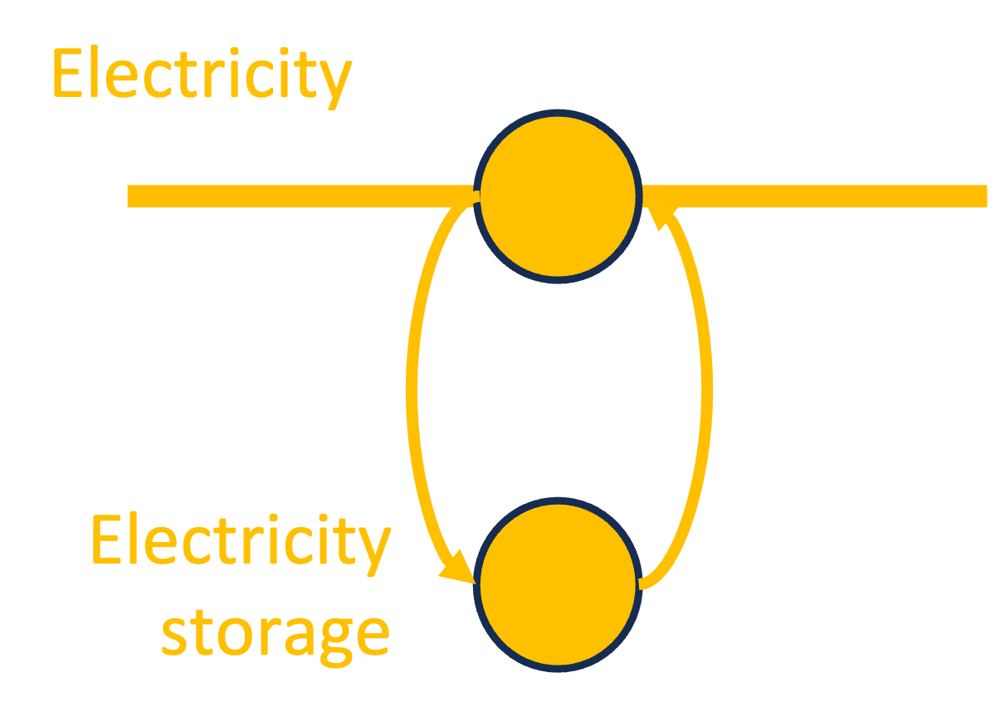


 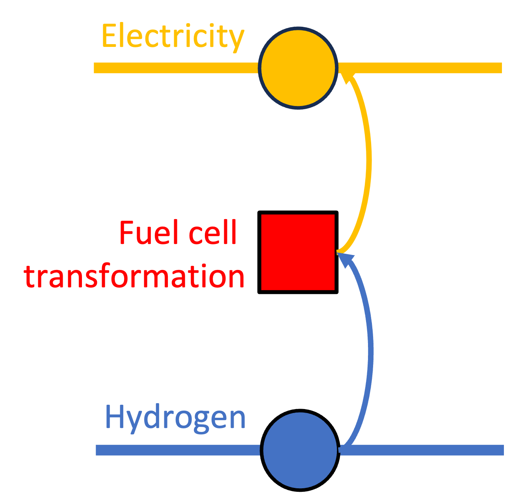
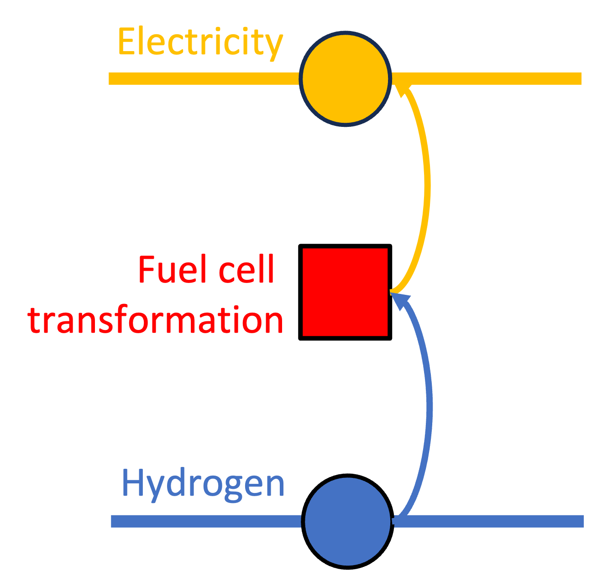 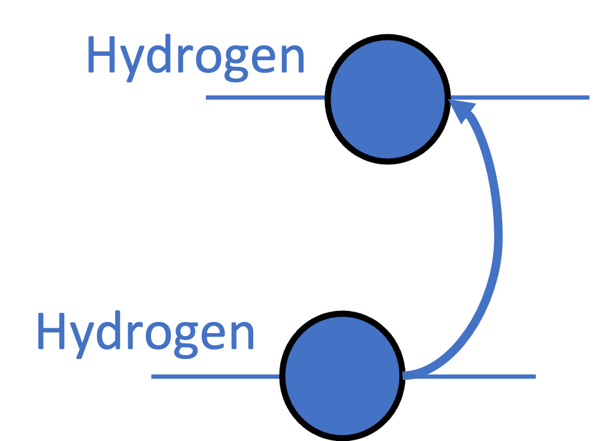
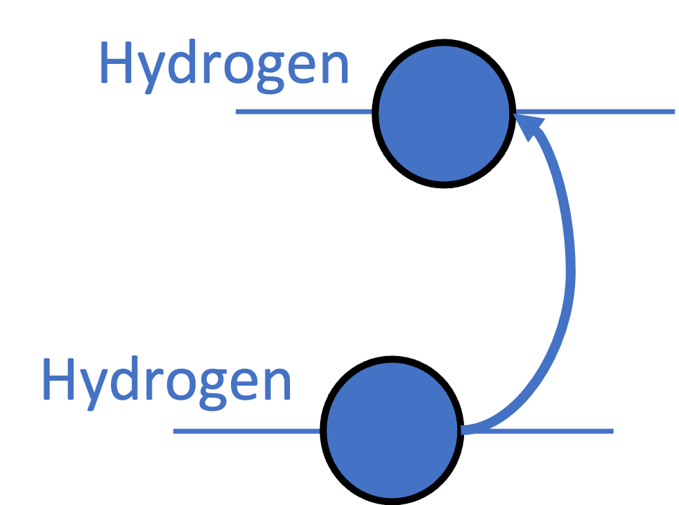 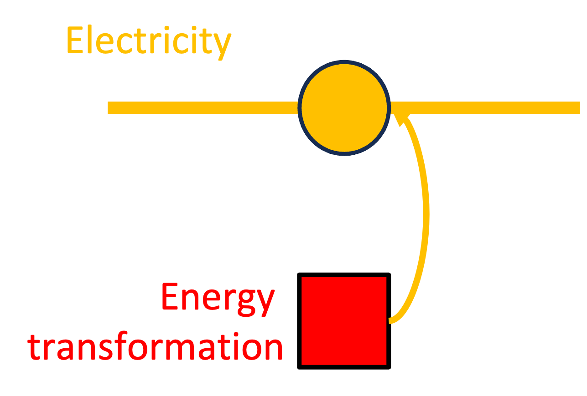
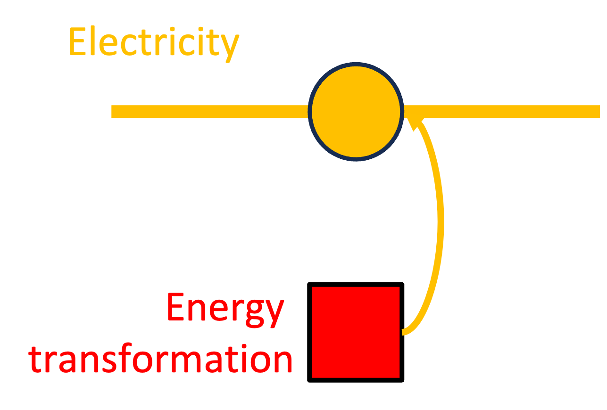 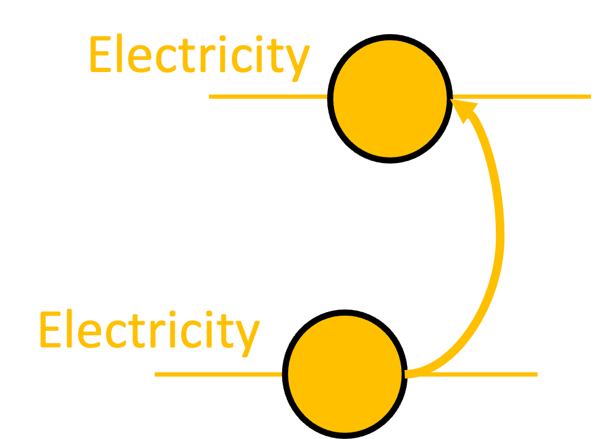
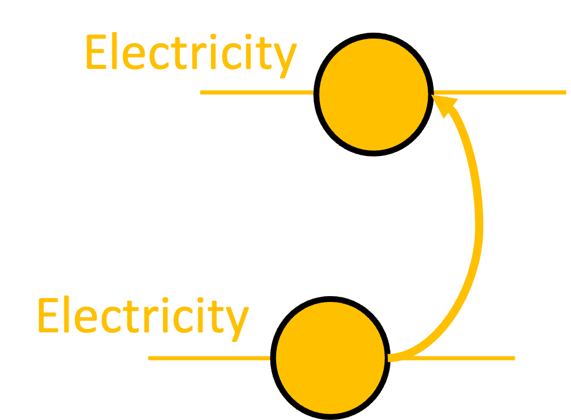 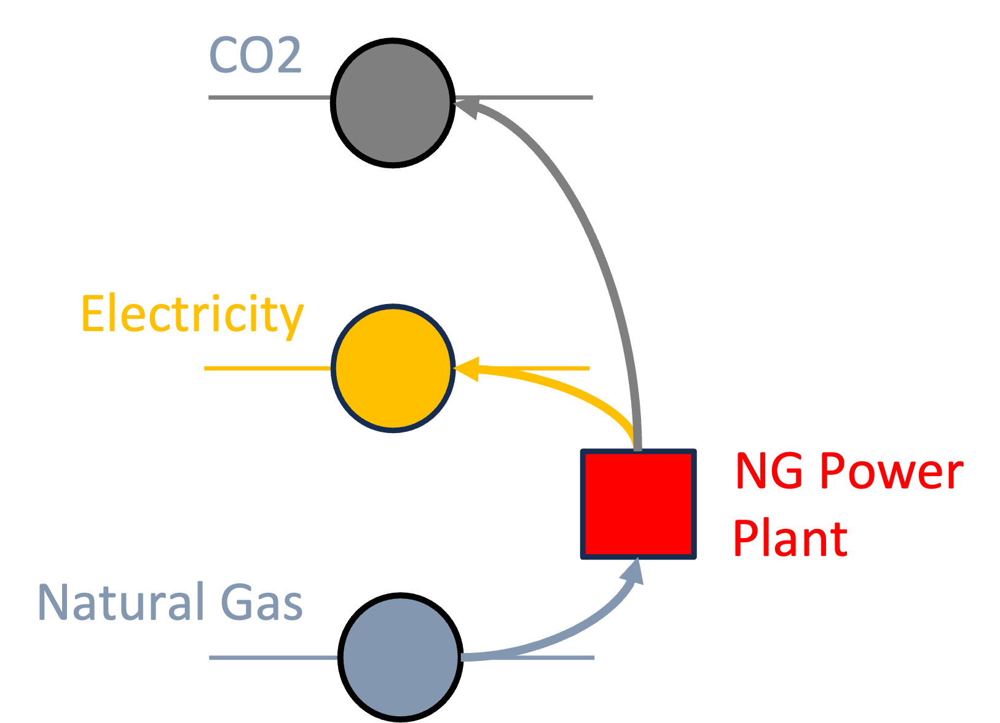
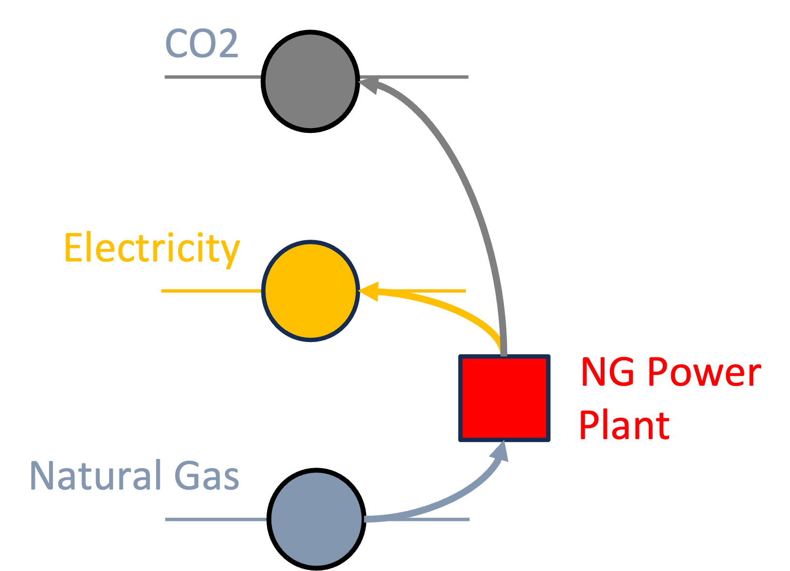